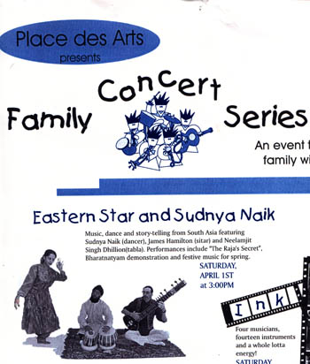
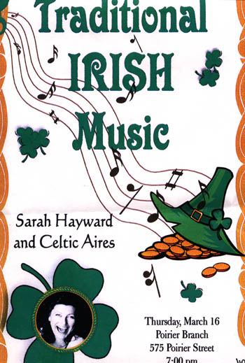

1) C.B.C. Radio; West Coast Performance (Moshe
Denburg)
2) Mosaic Film Score (Randy Raine-Reuch)
3) "Can You Hear my
Prayer" and "Masala" (demo 24-track)
4) "Surprise" film score -sitar (SFU Student Film)
5)
Studio Recording for feature film "First Generation" (Ishvar Lal)
6) Music for "Undying
Promise"
7) Sound Track for "Aids and the Street Child in Bombay" by Ross M. Pink
8) Asia Pacific Business School (Capilano College)
9) STARSITES
DNA Multimedia CDRom
10) Elephant
Head CD by Dal Dil Vog (sitar parts)
11) The Millennium Project (sitar
parts)
12) West Coast World Compilation
CD
13) Ravi Chanelle "Who's that Girl?" (sitar and esraj)
14) CBC Radio "Westcoast Performance"; Shashi Lata Virk
15) The Raja's Secret on "How Music Came to the World" CD
CLICK for SITAR RECORDING by James Hamilton
RETURN TO TOP
MUSIC ENSEMBLES
|
James Hamilton has spent over twenty-five years studying the music of
South Asia including fourteen years while living in India. He has acquired
an indepth knowledge of traditional Indian music, studying music history,
theory, and a variety of musical genres including North and South Indian
classical, folk and devotional forms. He studied privately with renowned
musicians and musicologists including Radhika Mohan Maitra and Ms Kalyani
Roy. In 1979, he completed a Master's Degree in Instrumental Music (sitar)
from Rabindra Bharati University in Calcutta. and, in 1986, he completed a
PhD in Social Anthropology (Ethnomusicology) from Queen's University,
Belfast, N. Ireland. His doctorial thesis, entitled "Sitar Music in
Calcutta", was published by the University of Calgary Press and also in
India. James has lectured and performed on the sitar in India, Canada, the
United States, and the United Kingdom. He is the leader of the world music
ensemble Eastern Star.
THE SITAR
The sitar is a long-necked fretted lute that is an important instrument in
North Indian classical music. The word sitar is from the Persian seh-tar
meaning "three strings", As with the present day Persian setar, older
models of the Indian sitar (then known as tanburs) were small and had three
or four strings. Due to the influence of Persian culture in the Moghul
courts of India, the Indian tanburs came to be referred to as sitars.
The early sitar was modified to suit it for the performance of Indian
Classical music. The three-stringed instruments of the eighteenth century
evolved into the larger seventeen to nineteen-stinged instruments that are
currently used. The modern sitars have two to four strings for melody,
drone and "punctuation" strings, as well as, sympathetic strings. The sitar
has become the most recognized of Indian musical instruments. Many
talented sitarists carry on the rich tradition of sitar performance. The
instrument has become better known in the West due to artists such as
Pandit Ravi Shankar and Ustad Vilayat Khan. During the 1960's, the sitar
became a western cultural icon used by the Beatles and other popular music
groups. It is now used in numerous forms of music from orchestral, pop
and jazz, to film scores and in TV commercials. Yet sitar music in India
remains a highly sophisticated art form, representing the culmination of
more than two thousand years of living tradition.
|
CLICK HERE FOR PHOTO OF EASTERN STAR
EASTERN STAR presents an
intercultural performance of World Music featuring Asian and Mediterranean
musics. The repertoire is derived from traditional sources and performed on the
sitar, mandolin, er-hu and tabla.
EASTERN STAR was featured in
last years Vancouver Sun Concert series and has received support from the Canada
Council for the Arts.
FEATURED MUSICANS
LAN TUNG
(ER-HU)
Lan Tung was educated in the Chinese Music Department of the
Chinese Cultural University in Taiwan. She also performs locally with her group
Orchid Ensemble. The er-hu is a two-stringed fiddle that is found throughout
most of Asia. It has a skin top and is played with a bow.
JAMES
HAMILTON (Sitar, Esraj)
James Hamilton studied the sitar music of
India for twenty years including fourteen years while living in India. He
completed a Master's Degree in Instrumental Music (sitar) from Rabindra Bharati
University in Calcutta, India and learned privately from renown musician and
musicologist Radhika Mohan Maitra.
JASBIR SINGH BHOGAL
(Tabla)
Jasbir learned with local tabla master Satwant Singh. Jasbir
is an accomplished performer and has provided able accompaniment to both
vocalists and instrumentalists.
|
|
PROGRAM (Sample)
(MIDI Files-most will play on both Sound Blaster and Roland Soundcards)
RAGA YEMAN (INDIA)
HASSAPIKOS (GREECE)
LA CUMPARSITA
SAND (ORIGINAL)
ROMA (ORIGINAL)
PURIA DHANASHRI (ORIGINAL)
RAGA LALIT (jig!) (ORIGINAL)
SHEPHERD GIRL (CHINA)
NEW YEAR'S EVE (CHINA)
BENGALI FOLK MEDLEY (INDIA)
JAYAJAYAMORE (INDIA)
KOJO NO TSUKI (JAPAN)
KOREAN SONG(KOREA)
AFGHAN LAHARA
CAN YOU HEAR MY PRAYER by Moshe Denburg
PERFORMANCE
SCHEDULE 1999
1st Sunday of Every Month, Co-op Radio
Every Friday
& Sat,. Jewel of India Restaurant
Feb 8,9,10,11,15,17, 18, Cultural
Metaphors
Feb 14th, India Grill Restaurant
Feb 13,15,18,19,20, Cultural
Metaphors Shows
Feb. 20th, Fairchild Radio (Crossing Cultures)
June 2nd,
High Croft Manor
June 13th, Performance Works (Wedding)
June19th, North
Van Folkfest
June 20th, Centennial Theatre
June 26th, Plaza of
Nations
June 27th, Raja Banquet Hall (Wedding)
July 1st, Pacific Inn
(Wedding)
July 23, Dr Sun Yat Sen Garden
July 30th, U.B.C.
Convention
Aug 2nd, U.B.C. Convention
Aug 8th, Hayward Bandstand
(Vancouver)
Aug 15th, Hayward Bandstand (Vancouver)
Sept 5th, Croatian
Cultural Centre (Wedding)
October 10th, Enterprise Hall (Wedding)
October
17th, Raja Banquet Hall
November 4th, Coquitlam Public Library
November
6th, India Grill (Bellingham)
November 14th, Roundhouse Community
Centre
November 19th, Heritage Hall (Private)
Dec 4th, Douglas
College
PERFORMANCE SCHEDULE 2000
Every Friday & Sat.,
Jewel of India Restaurant
Feb 14th India, Grill Restaurant
February 19,
Echoes of a Blue Planet, Roundhouse Community Centre
April 1st, Place des
Arts Coquitlam
April 3rd, 17th, May 21st. June 1st,15th Naam
Restaurant
March 25th, Sonic Boom, Western Front
May 14th, Pan Pacific
Hotel (Wedding-private)
June 25th Vancouver Jazzfest
July 15th, U.B.C.
Golf Club (Wedding-private)
July 29th, Hyatt Regency Hotel
(Wedding-private)
PERFORMANCE SCHEDULE 2001
Every Monday and Tuesday at Yogi's, 1408 Commercial, Vancouver
The World Music of Moshe Denburg, March 4th, Norman Rothstein Theatre
ERACISM DAY (Coquitlam), March 24th
Vancouver Jazzfest, TBA
INDIA GRILL (Bellingham), April 14th
Night at the TAJ, April 28th
For further Information on upcoming concerts
call James Hamilton at Phone (604) 931 6790
RETURN TO TOP
|
_TRADITIONAL DANCE AND MUSIC FROM INDIA
|
 |
|
SUDNYA NAIK
(Indian Classical Dance)
Click for Photograph
Sudnya is a professional Bharat Natyam dancer and
choreographer. She completed her BFA in Bharat Natyam and MFA in Choreography
from the University of Bombay, India. She is one of the artists performing
through "Art Starts in Schools" and also in the "Artist in Residence" program of
Vancouver School Broad to conduct workshops and lecture demonstrations.
DAL HOTHI
Storyteller and Musician
Click for Photograph
Dal Hothi of DAL-DIL-VOG narates the story of the Raja's Secret and provides musical accompaniment on the Dhol. The music performed is an eclectic mix of Panjabi Bangra and Indian Folk Music.
NEELAMJIT SINGH DHILLON (Tabla)
Nealamjit is a student of
local tabla master Satwant Singh. In the summer of 1998 he furthered his studies
of tabla with Zakir Hussain in California.
JAMES HAMILTON
(Sitar, Esraj)
Click for Photograph
James Hamilton
studied the sitar music of India for twenty years including fourteen years while
living in India. He completed a Master's Degree in Instrumental Music (sitar)
from Rabindra Bharati University in Calcutta, India and learned privately from
renown musician and musicologist Radhika Mohan Maitra.
|
For Information call James Hamilton at PH: (604) 617 6790
or Musical Occasions (604) 266 3619 |
|
SAMPLE PROGRAMME
1 Sitar and Tabla
Introduction
2 Holi (Dance demonstration)
3 Raga Kafi
4 Bharat Natyam
(dance)
5 The Raja's Secret (Storytelling)
RETURN TO TOP
Dal Hothi of DAL-DIL-VOG
joins with EASTERN STAR to present an eclectic mix of Bangra and Asian Music.
Repertoire will include exerpts from DAL-DIL-VOG's CD's The New World and
Elephant Head, as well as, EASTERN STAR's renditions of Asian Music (West Coast
World CD)
|
|
Artists will include:
DAL HOTHI-vocals and
dhol
. JAMES HAMILTON-sitar, esraj and mandolin
. CHRIS
MESEYTON-accordion, keyboards
. NEELAMJIT SINGH DHILLON-tabla,
flute
. ANDREW KIM-guitar
. LUCAS SMALLEY-drums
.
SHOWS 2000
Churchill School -May 26th 2000
Vancouver Children's Fest
Party -June 3rd 2000
Surrey Children's Festival -June 9th &
10th
Canada Day - Canada Place -July 1st 2000
Hayward Bandstand-Vancouver
-July 30th 2000
Gujarati Society of Britiish Columbia -September,
2000
Canada Place - Conference -November, 2000
PREETO
For further information
contact James at 931 6790 E-MAIL jshsitar_@hotmail.com
RETURN TO TOP
|
EASTERN STAR-PERFORMANCES AND WORKSHOPSEastern Star
is an interculural ensemble that performs Classical and Folk music from India.
James Hamilton (the group's founder) studied the sitar music of India for twenty
years including fourteen years while living in India. He completed a Master's
Degree in Instrumental Music (sitar) from Rabindra Bharati University in
Calcutta, India and learned privately from renown musician and musicologist
Radhika Mohan Maitra. James' doctoral thesis titled Sitar Music in Calcutta: an
Ethnomusicological Study has been published by University of Calgary Press.
MUSIC PERFORMANCES AND WORKSHOPS
a) Raga and tala in North
India.
This can be presented as a performance or lecture/demonstration.
The presentation can be modified and targeted towards a general audience, to
children or to listeners with a background in music.
b) Asian Music on
Sitar and Tabla.
In this presentation the group performs music from South
Asia, Afghanistan, China, Korea and Japan. The show can also be broadened to
include Greek, Celtic and Baroque music.
c) Shashi Lata Virk
(ghazal)
The group can accompany this renown ghazal singer.
d)
Indian influence on Sixties Pop Music
This presentation looks at the use
of sitar (and other Indian instruments) in the pop music of the sixties. Songs
such as Within you Without you, Paint it Black are played on the sitar.
e)
Sitar Music in Calcutta
James Hamilton presents an overview of Sitar
music in the city of Calcutta. Topics covered include the history of Calcutta,
music in the Raj Period and Post-Independence developments.
RETURN TO TOP
|
|
 |
|
Feisty ballads, solemn laments,
spirited jigs and reels; culture, thick as a Guinness, is brought to life in
song and lilting tones of the accordion and mandolin. That for which the spirit
thirsts, lingers on....
SARAH HAYWARD, VOCALS
Sarah is an local
actress and singer. She has performed in shows such as Outer Limits, The Colour
of Courage, the Commish and the Mystery of Oak Island. She played the part of an
Irish Selkie (Seal-woman) in the production of Cultural
Metaphors.
CHRIS MESEYTON, ACCORDION
"The Ashley MacIsaac of
the Accordion"(Georgia Straight) Chris is one of Vancouver's top players. He
also has recently released a CD titled Clean it Up. His brother CURTIS joins the
group on percussion.
JAMES HAMILTON, MANDOLIN, VOCALS
James has lived
and performed in Belfast, Northern Ireland. He has recorded with several local
groups including Dal-Dil-Vog, Eastern Star and Millennium
Project.
SAMPLE OF CONCERTS/VENUES PLAYED 1994-2000
: Glass
Slipper (3 times), North Vancouver Port's Day 1995, Unicorn (2 times), Hotel
Vancouver (Taste of the Nation), Vancouver CityFest, P.N.E. (1995 & 1996),
Quatsino Inn, Ladysmith Inn, Down Under Club (Penticton), Keremeos Mountain Inn,
Princeton Inn (Princeton), Dragon Boat Festival 97-98-99, New Westminster Quay
96-98-99-2000, Lonsdale Quay 98,99,Shabdolt Arts Centre (97-98), Burnaby Village
Museum 96-97-98-99, City Square 96-97, Faces of World Culture 97-98, Vancouver
TV Xmas Show 1997, Festival du Bois 98,2000. Golden Spike Days 98, Plus 20 Xmas
shows in 96,97,98,99. Coquitlam Library 97,98 99-2000, Queen of Diamonds (ship)
99. Metrotown Summer Concert Series 99, Vancouver First Night 2000.Canada Place
2000
|
For Information call James Hamilton at PH: (604) 931 6790
or Musical Occasions (604) 266 3619 |
|
|
SONG LIST
(MIDI Files-most will play on both Sound Blaster and Roland Soundcards)
WHO'S COMING TO DINNER (ORIGINAL)
ROCKY ROAD TO DUBLIN....SLIP JIG
FLOWERS OF EDINBURGH....SCOTTISH
TELL ME MA....IRISH SONG
BOTANY BAY
BOTANY BAY(Roland sound card version)
BYRON'S HORNPIPE
STAR OF THE COUNRY DOWN
WATERLOO HORNPIPE....HORNPIPE
PLANXTY DREW....IRISH
O'CAROLAN'S DRAUGHT....IRISH
DROWSEY MAGGIE....REEL
RAKES OF KILDARE.... IRISH JIG
BLACK VELVET BAND....BALLAD
DENNIS MURPHY'S POLKA.....POLKA
FLOP-EARED MULE.....BLUEGRASS
LITTLE BEGGARMAN.....IRISH SONG
CELTADELIC.....ORIGINAL CELTIC
DEAR OLD DONNEGAL.....IRISH SONG
FINNEGAN'S WAKE....IRISH SONG
SCATTER THE MUD....IRISH JIG
TRIPPING UP THE STAIRS....IRISH JIG
ST ANNE'S REEL....REEL
WEARING OF THE GREEN....IRISH SONG
REEL DE MONTREAL....REEL
WALTZING MATILDA....AUSSIE SONG
SOLDIER'S JOY....BLUEGRASS
DRUNKEN SAILOR....MARITIME
RED HAIRED BOY....SCOTTISH REEL
IRISH WASHERWOMAN....IRISH JIG
WILD ROVER....IRISH SONG
MARY HAMILTON....SCOTTISH WALTZ
TEMPERANCE REEL....REEL
SLEIGO MAID....REEL
LA BASTRIGUE....FRENCH
CARRION CROW....ENGLISH
DENNIS MURPHY'S SLIDE....IRISH SLIDE
CHIEF O'NEIL'S FAVOURITE....INSTRUMENTAL
FOGGY DEW....IRISH
DANNY BOY....IRISH SONG
GARY OWEN....IRISH JIG
JOHNNY COPE ....SCOTTISH
FISHERMAN'S HORNPIPE....HORNPIPE
SWALLOWTAIL REEL....REEL
MERRY BLACKSMITH...REEL
GILLIGAN'S ISLAND THEME....BALLAD
CLIFFS OF DONEEN....IRISH SONG
GREEN GROWS THE RUSHES....SONG
SPANCEL HILL.....IRISH SONG
UNICORN....IRISH SONG
HOT ASPHALT....IRISH SONG
WEARING OF THE GREEN....IRISH SONG
REEL DE MONTREAL.....REEL
MARY HAMILTON....SCOTTISH WALTZ
MOLLY MALONE....IRISH SONG
LET IT SNOW
JINGLEBELL ROCK
HERE WE COME A WASSAILING
GOOD KING WENCESLAS
CHRISTMAS IN KILARNEY
GOD REST YE MERRY GENTLEMEN
I'LL BE HOME FOR XMAS
ANGELS WE HAVE HEARD ON HIGH
LET IT SNOW
WHAT CHILD IS THIS
WE THREE KINGS
JOY TO THE WORLD
SILENT NIGHT
The Best of Greek and Mediterranean music. Are these guys Greek?
CHRIS MESEYTON, ACCORDION
"The Ashley MacIsaac of
the Accordion"(Georgia Straight) Chris is one of Vancouver's top players. He
also has recently released a CD titled Clean it Up.
JAMES HAMILTON, MANDOLIN,
James is a multi-instrumentalist who has performed with bousooki player Ron Lee (Author of Damn Gypsy). He has recorded with several local groups including Dal-Dil-Vog, Eastern Star and Millennium
Project.
SAMPLE OF CONCERTS/VENUES PLAYED 1994-2001
Greek Restaurants and private parties.
GHOST (JAZZGRASS)
VIVALDI CONCERT IN C (MANDOLIN)
BLUES BY JIM (ORIGINAL)
SONG OF INDIA
To find other sites with MIDI files, visit
Standard Midi Files on the Net
RETURN TO TOP
"He is well on his way to becoming a first rate sitarist and I am very
happy to have had him as a student."
RADHIKA MOHAN MAITRA (1979)
"James Hamilton, a young Canadian sitarist groomed by the late Radhika
Mohan Maitra, began the day's recital with raga Shuddha Kalyan."
"It is heartening to witness Westerners playing Indian instruments
with devotion and dedication with the assimilation of the philosophy
behind Indian Classical Music."
STATESMAN (NEWSPAPER), CALCUTTA (1989)
"An ethnomusicologist, the artiste's approach to music has distinctive
depth, complemented by a conscious melodic perfection."
THE TELEGRAPH (NEWSPAPER), CALCUTTA (1989)
"He and Regula (Qureshi) had only just met for the first tme, but played
as if they'd been accompanying each other for years."
IRISH CULTURAL SOCIETY (NEWSLETTER), CALGARY (1991)
Asian Music
Journal of the Ragmala Society
The Music Review
Pacific Affairs
MUSICIANS AND MUSIC
Ustad Imrat Khan
Ustad Mushtaq Ali Khan
Steven
Landsberg
Pandit Ravi
Shankar
Ustad Ali Akbar Khan (College of
Music)
Pandit
Buddhadev Das Gupta
Michael Robbins
Sanjoy Bandopadhyay
Sitar Fusion: Gerald Van Waes
Rabindra Bharati University
SITES
Santoor
Sruti Magazine
Raga Records
Bicycle riding guru!
CELTIC MUSIC AND CULTURE
MIDI FILES ON THIS SITE
Lost Links!! If you find them let me know.
SITAR MUSIC FOR WEDDINGS
LINK TO DOWNLOADABLE VIDEO INTERVIEW
FROM MEDIA-ON-TAP
RETURN TO TOP
|


|
?001 James Hamilton
|

{kind=link}
{kind=link}
{kind=link}